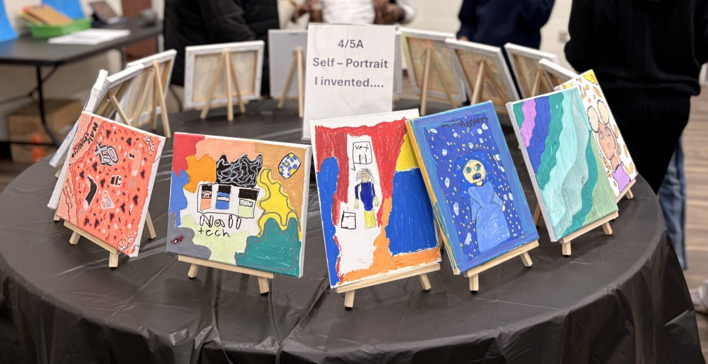
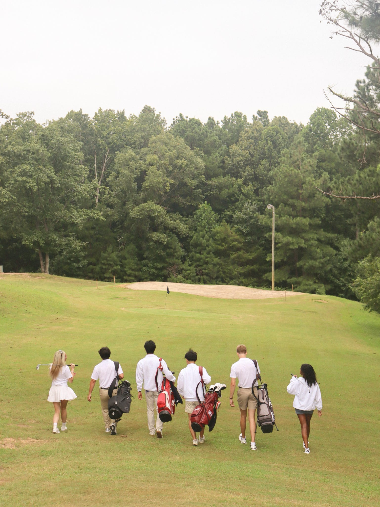
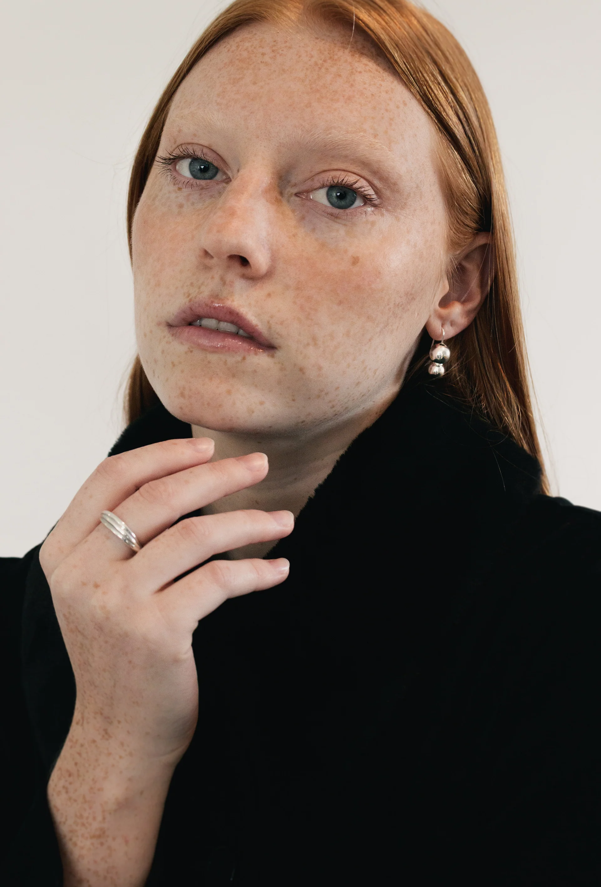
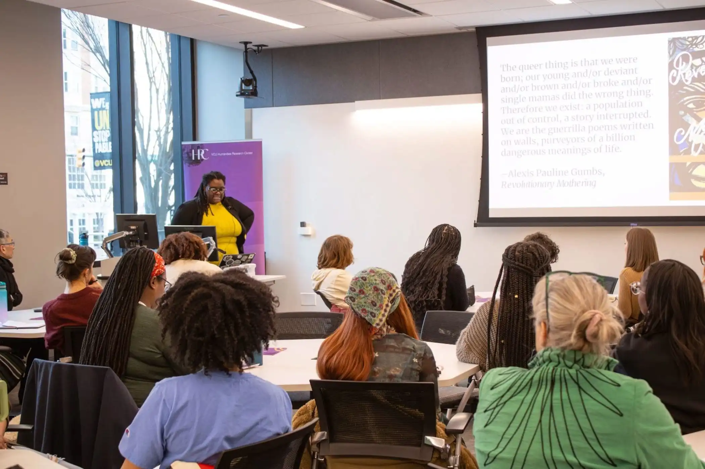

How I Work
I combine strategy and creativity to build meaningful brand connections. Every campaign starts with intent, then gets shaped into messaging that feels clear, elevated, and culturally relevant.
PR and Marketing Professional
"Creating stories, shaping perceptions."
...For me, it's not a mystery-it's a craft. I'm passionate about bringing together creative vision and strategic insight to build brand identities that don't just speak-they connect.
I love asking the question most people skip: Why does this brand matter? I study what drives consumer behavior, play with aesthetics, and turn insights into campaigns that stick.
I'm always looking for opportunities where I can push ideas, shape brand identity, and make marketing that feels smart, intentional, and unmistakably creative.

I combine strategy and creativity to build meaningful brand connections. Every campaign starts with intent, then gets shaped into messaging that feels clear, elevated, and culturally relevant.
Audience-first, insight-driven, and always focused on the bigger picture. I blend data, trends, and intuition so the final work not only looks beautiful, but lands with the people it is meant to move.
Strong communication turns ideas into impact. When a brand speaks with purpose, people pay attention, trust builds faster, and good creative becomes measurable momentum.
Communications Intern
Upcoming: Supporting communications, media outreach, and brand storytelling initiatives.
PR Intern
Support client accounts through research, media relations, and communications execution.
Draft newsletters and client materials, and contribute nonprofit features for The Phil publication.
Vice President of Public Relations
270% Engagement Growth
Boosted Instagram engagement through visually compelling content.
Create and edit branded content using Adobe tools, Canva, CapCut, and Photoshop.
PR Intern
832% Engagement Growth
Drove brand awareness through strategic creator collaborations and audience growth campaigns.
Tracked performance in Meta Suite, Shopify, and Faire to optimize campaigns in real time.
Spectrum Writer
Wrote culture and campus stories with a clear, audience-focused voice while collaborating with editors on tight deadlines.
Managing Editor
Led editorial planning, managed story development, and guided revisions to keep each issue visually cohesive and publication-ready.
Build clear narrative frameworks that align brand voice to audience intent.
Develop press-ready messaging, pitches, and story angles for earned coverage.
Create structured content systems that improve consistency and engagement.
Translate data and behavior patterns into actionable campaign direction.
Design visual assets and short-form creative that support campaign goals.
Track performance and optimize campaign decisions using real-time metrics.
Do you like this website? I made it. Designed with clean hierarchy and intent.
BS Mass Comms
Focus in PR • Minor in Marketing
Expected Graduation: December 2026
Download Resume
Feature article published on The PhilVA.

Feature article published on The PhilVA.
Campaign creative and promotional strategy for the brand's seasonal giveaway.

I designed the campaign graphic and supported recruitment marketing direction.

I made the social post, took and edited the photos, and designed the merch.

I led the web design direction and built the visual experience for the site.

Commonwealth Times feature on medical inequality and public health access.

Commonwealth Times arts feature focused on accessibility and community impact.